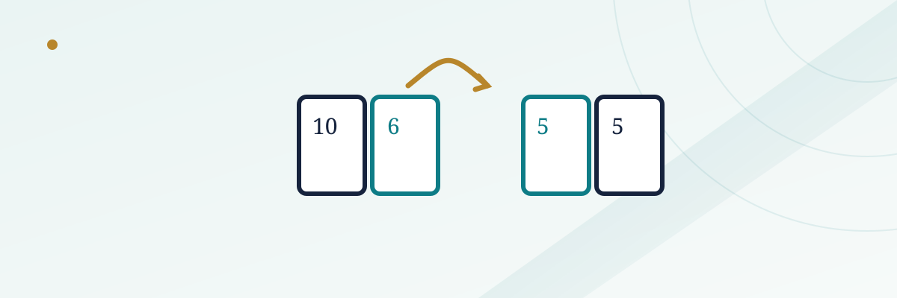

Blackjack Switch: How Swapping Cards Between Two Hands Changes the Math

Blackjack Switch takes the one rule every blackjack player learns not to break — play your own hand, as dealt — and flips it into the entire point of the game. You play two hands at once, and after the deal you're allowed to swap one card between them to build the best two hands you can. It sounds like a free gift from the casino. It isn't, and the two rule changes that pay for that gift are exactly what make this a genuinely different game to learn, not just a blackjack variant with a gimmick bolted on.
In this guide
How a hand of Blackjack Switch actually works
You place two equal bets and are dealt two separate hands, each getting two cards exactly like standard blackjack, typically from a six- or eight-deck shoe. Before you make any other decision, you get one switch: you may exchange the second card dealt to hand one with the second card dealt to hand two. You can't touch the first cards, and you only get to do this once, right after the initial deal — not later in the hand.
The appeal is obvious once you see an example. Say your two hands come out as a 10-6 (16) and a 5-5 (10). Switched, those become a 10-5 (15, still rough) and a 6-5 (11, a strong doubling hand) — not a dramatic upgrade in that case. But a classic switch scenario looks more like a 10-10 (20) sitting next to a 10-6 (16): swap the sixes and tens appropriately and you can turn a strong 20 and a weak 16 into two hands that are both in much better shape, occasionally even two blackjacks from cards that started out as one strong hand and one middling one. You're not getting new cards — you're just rearranging four cards you were already dealt into the best two hands those four cards can make.
From there, both hands play out with otherwise standard blackjack rules: hit, stand, double, split, against a single dealer hand that's dealt once and applies to both of your hands at the end.
The trade-off: a dealer 22 pushes
If switching were simply added to standard blackjack with no other changes, the player edge would be large enough that no casino would spread the game. The main rule that pays for it: when the dealer busts specifically by drawing to a hard 22, it isn't a bust — it's a push against every player hand that isn't itself a natural blackjack. A player sitting on a strong 19 or 20 who would normally scoop a win when the dealer tips over 21 instead just gets their bet back if the dealer lands on exactly 22.
This single rule claws back a meaningful chunk of the edge the switching option hands to the player, because a dealer bust on 22 specifically is common enough to matter — it isn't some vanishingly rare technicality. It's the main engine that keeps the house edge in a reasonable range despite giving players so much control over their starting cards.
The second trade-off: blackjack pays even money
Standard blackjack pays a player blackjack at 3-to-2 almost everywhere that still offers a fair game. Blackjack Switch typically pays a natural blackjack at even money — 1-to-1 — instead. That's a real cut to one of the best outcomes in the game, and it's the second lever the house uses to balance out the advantage of being able to engineer better starting hands through switching.
Between the dealer-22-push rule and the reduced blackjack payout, the game lands at a house edge that's broadly competitive with mainstream blackjack variants when played with full correct strategy — commonly cited in the neighborhood of 0.6% or so depending on the exact number of decks and table rules, which is squarely in line with, not dramatically better or worse than, a typical multi-deck blackjack game. The switching option isn't a loophole; it's a genuinely different game whose extra player control is already priced in by the two rule changes above.
The Super Match side bet
Most tables spreading Blackjack Switch also offer an optional side bet called Super Match, based purely on the four cards you're originally dealt across your two hands — before any switch. It pays out if those four cards contain matching ranks: typically one pair pays a small amount, two pairs or three of a kind pays considerably more, and all four cards matching in rank pays the biggest prize on the table. Because it's a four-card combinatorics bet decided before any strategy decisions even start, Super Match carries a meaningfully higher house edge than the base game — commonly cited in the mid-single digits, similar in spirit to the side bets attached to other table games like baccarat or three card poker.
| Rule | Standard blackjack | Blackjack Switch |
|---|---|---|
| Hands per bet | One | Two, with one card swap allowed |
| Blackjack payout | Typically 3 to 2 | Typically even money (1 to 1) |
| Dealer hard 22 | A bust — dealer loses | A push against non-blackjack hands |
| Approx. house edge (best strategy) | ~0.5% (rules-dependent) | ~0.6% (rules-dependent) |
| Notable side bet | Varies by casino | Super Match (based on all four initial cards) |
How switching changes basic strategy
Correct Blackjack Switch strategy has two separate layers, and skipping the first one is the most common way players waste the game's main advantage. The first layer is deciding how to switch: given all four of your original cards, which arrangement produces the best pair of hands, factoring in that a made 20 or 21 is worth more when the dealer is live (not threatening a 22 push) than when a dealer 22 is a real possibility. The second layer is ordinary blackjack strategy — hit, stand, double, split — applied to whichever two hands you land on after switching, but adjusted slightly from standard blackjack charts because of the even-money blackjack payout and the dealer-22 push rule changing the value of certain borderline hands.
Because the correct switch decision depends on exactly which four cards you were dealt, it isn't something most players can work out reliably at the table from memory the way a simple hit/stand decision is — it benefits from having studied a switching chart in advance, the same way serious blackjack players study a basic strategy card before sitting down.
Common mistakes
- Switching purely to avoid a weak hand, without checking the other hand's cost. A switch that fixes one hand but ruins the other isn't automatically correct — the decision is about the best combined outcome, not rescuing the worse-looking hand in isolation.
- Forgetting the dealer-22 push changes hand values. A 19 or 20 is slightly less valuable here than in standard blackjack, because one specific dealer outcome that used to be an automatic win is now a push.
- Treating the even-money blackjack payout as a minor detail. Over a full session, the gap between 3-to-2 and even money on your blackjacks is one of the larger contributors to the game's overall house edge.
- Sizing a Super Match bet like a core wager. It's a side bet with a notably higher house edge than the main game, not a parallel way to play the same hand.
For the fundamentals this game modifies, see our blackjack basic strategy guide, and for how other casino side bets compare in house edge, see our guide to blackjack side bets.
Frequently asked questions
Is Blackjack Switch a good game for beginners?
It's playable for a beginner, but the switching decision adds a genuine layer of strategy beyond standard blackjack. A new player who switches purely on instinct, without a strategy reference, gives up a chunk of the game's main advantage.
Why does the dealer pushing on 22 matter so much?
Because a dealer going over 21 is usually an automatic player win in blackjack. Carving out the specific case of a dealer 22 as a push (rather than a bust) removes a meaningful share of hands that would otherwise be sure wins for the player, which is how the game offsets the advantage of switching cards.
Can you switch cards more than once per hand?
No. The swap is a single, one-time exchange of the second card dealt to each hand, made immediately after the initial deal and before any other playing decisions.
Is the Super Match side bet worth playing?
It carries a notably higher house edge than the base game, similar to side bets on other table games. It's a reasonable bet for entertainment given its bigger payouts for multiple pairs, but not a bet to size the same as your main wager.